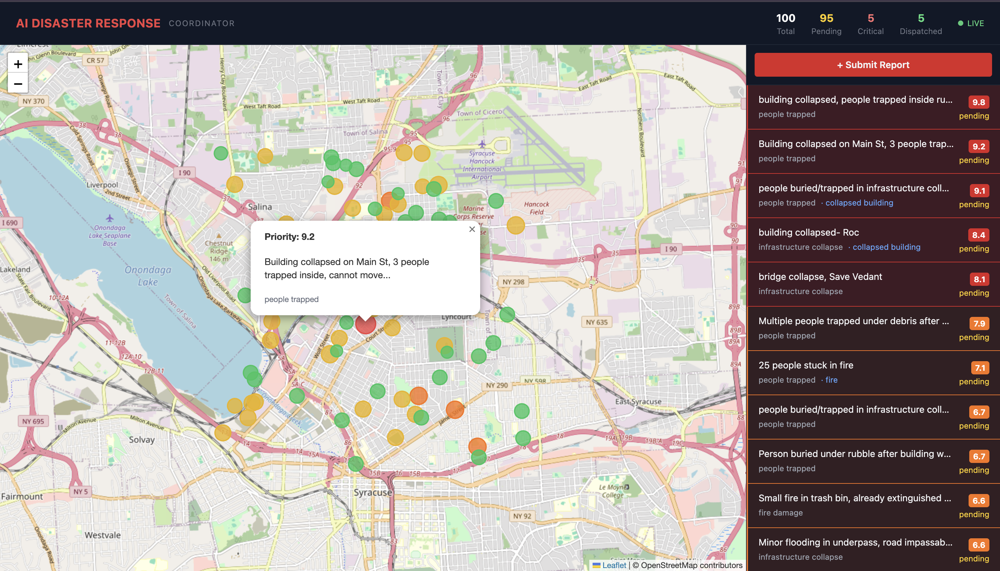

During major disasters — earthquakes, floods, fires — emergency services receive thousands of reports simultaneously. Human dispatchers cannot quickly determine which calls are life-threatening. Critical cases get delayed. Lives are lost.
Each year, over 400 natural disasters affect 160+ million people worldwide. The 2010 Haiti earthquake killed 230,000 — many due to delayed rescue coordination. The 2023 Turkey–Syria earthquake displaced 5.9 million people within 48 hours, overwhelming every local emergency system.
Traditional 911 systems rely on human operators to classify and route calls one by one. During a mass-casualty event, this single-threaded triage becomes the bottleneck that costs lives.
Rescue-AI targets the critical first 72 hours — when AI-assisted triage can process hundreds of reports per minute, ensuring that the most life-threatening situations reach responders first, not last.
Rescue-AI is the first open-source disaster triage system combining real-time NLP + computer vision + GPS clustering in a single deployable stack — with a built-in offline mesh fallback for disaster zones where infrastructure has been destroyed.
Unlike commercial CAD (Computer-Aided Dispatch) systems costing $100k+, Rescue-AI runs on commodity hardware, is fully open-source, and can be deployed in under 10 minutes using Docker.
| Class | Level | Score | Trigger Keywords |
|---|---|---|---|
| People Trapped | CRITICAL | trapped, buried, stuck, cannot move | |
| Injured People | CRITICAL | bleeding, unconscious, dying, severe | |
| Infrastructure | HIGH | collapsed, structural, building down | |
| Fire Damage | HIGH | fire, burning, flames, smoke, blaze | |
| Request Rescue | HIGH | rescue, SOS, help, emergency | |
| Flood Damage | MEDIUM | flood, flooding, water rising, submerged | |
| Low Priority | LOW | minor, debris, small, road damage |
Hybrid model: DistilBERT primary · keyword fallback when model confidence is low · smart override prevents critical reports from being downgraded
